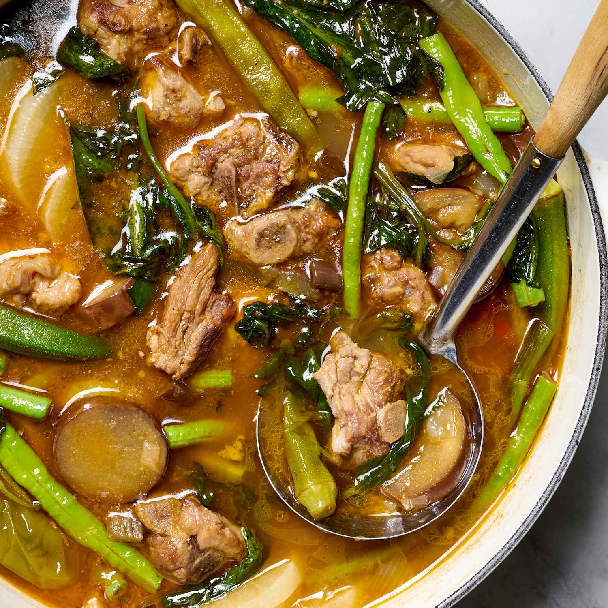
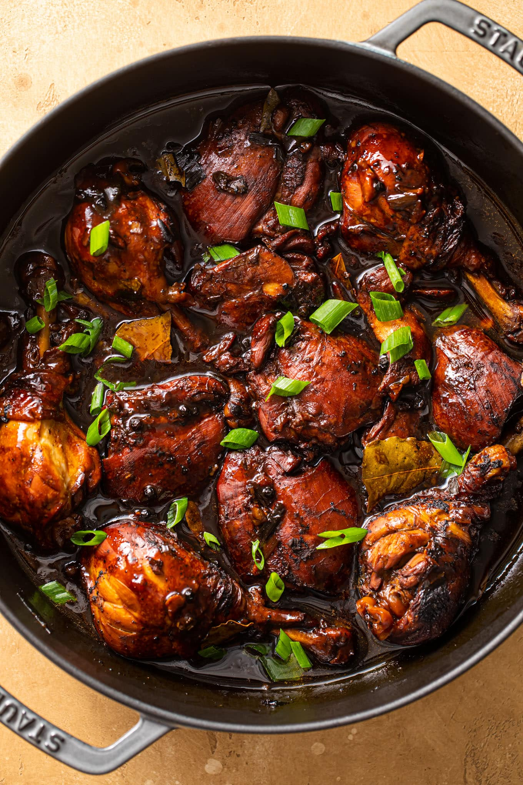
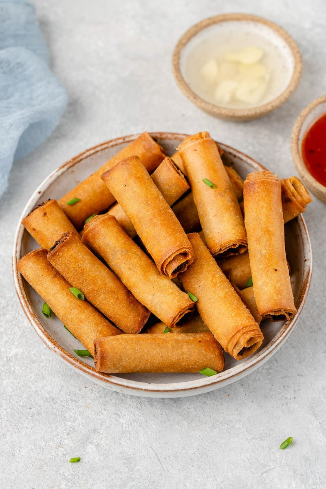
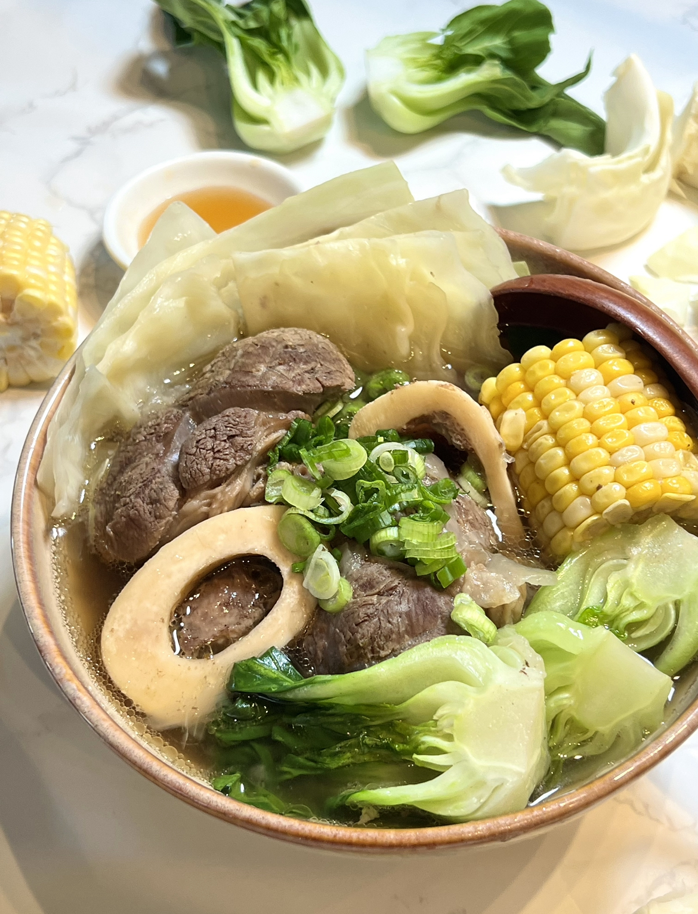
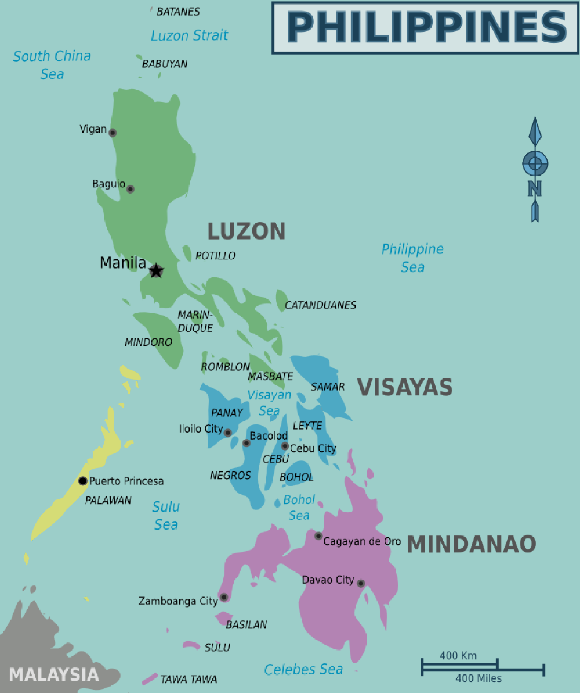

Sinigang
A sour and savory stew often made with tamarind, vegetables, and pork or shrimp. It is comforting and tangy, perfect with steamed rice.
The Philippines is a country in Southeast Asia made up of 7,641 islands and is divided into three main island groups: Luzon, Visayas, and Mindanao. It has a rich history influenced by various cultures, such as Spanish and American colonization. The country is known for its beautiful beaches, biodiversity, diverse and vibrant culture, and welcoming hospitality. Filipino culture is made up of strong values on family, festivals, food, and music.
Manila, the capital of the Philippines, is a bustling metropolis blending Spanish colonial history with modern city life. The city is known for its vibrant culture, historic Intramuros district, and the famous Manila Bay sunset.
Recommendations:
Tap a card to flip it and learn more about each dish.

A sour and savory stew often made with tamarind, vegetables, and pork or shrimp. It is comforting and tangy, perfect with steamed rice.

A savory, tangy dish made with soy sauce, vinegar, garlic, bay leaves, and peppercorns, usually simmered with chicken or pork until tender.

Thin, crispy rolls filled with savory ingredients like ground pork and vegetables. They are often served with a sweet and sour dipping sauce.

A hearty beef shank soup with bone marrow, slow-cooked until the meat is very tender and served with vegetables like corn and cabbage.

A rich and savory peanut stew usually made with oxtail, tripe, and vegetables, traditionally served with bagoong (fermented shrimp paste).

A sizzling dish made from chopped pork jowl and ears, pork belly, and chicken liver, seasoned with calamansi, onions, and chili peppers.
| Island Group | Population (2020) | Most Populated City | Least Populated City |
|---|---|---|---|
| Luzon | 62,196,942 | Quezon City | Kalayaan, Palawan |
| Mindanao | 26,252,442 | Davao City | Burgos, Surigao del Norte |
| Visayas | 20,583,861 | Cebu City | Maslog, Eastern Samar |
